Section 3.7 Standard Form
We’ve seen that a linear relationship can be expressed with an equation in slope-intercept form or with an equation in point-slope form. There is a third form that you can use to write line equations. It’s known as standard form.
Subsection 3.7.1 Standard Form Definition
Imagine trying to gather donations to pay for a \(\$10{,}000\) medical procedure you cannot afford. Oversimplifying the mathematics a bit, suppose that there were only two types of donors in the world: those who will donate \(\$20\) and those who will donate \(\$100\text{.}\) How many of each, or what combination, do you need to reach the funding goal? As in, if \(x\) people donate \(\$20\) and \(y\) people donate \(\$100\text{,}\) what numbers could \(x\) and \(y\) be? The donors of the first type have collectively donated \(20x\) dollars, and the donors of the second type have collectively donated \(100y\text{.}\) Reflect on the meaning of \(20x\) and \(100y\text{.}\) Make sure you understand their meaning before reading on.
So altogether you’d need
\begin{equation*}
20x+100y=10000
\end{equation*}
This is an example of a line equation in standard form.
Definition 3.7.2. Standard Form.
It is always possible to write an equation for a line in the form
\begin{equation}
Ax+By=C\tag{3.7.1}
\end{equation}
where \(A\text{,}\) \(B\text{,}\) and \(C\) are three numbers (each of which might be \(0\text{,}\) although at least one of \(A\) and \(B\) must be nonzero). This form of a line equation is called standard form. In the context of an application, the meaning of \(A\text{,}\) \(B\text{,}\) and \(C\) depends on that context. This equation is called standard form perhaps because any line can be written this way, even vertical lines (which cannot be written using slope-intercept or point-slope form equations).
Checkpoint 3.7.3.
For each of the following equations, identify what form they are in.
| \(2.7x+3.4y=-82\) | |
| \(y=\frac{2}{7}(x-3)+\frac{1}{10}\) | |
| \(12x-3=y+2\) | |
| \(y=x^2+5\) | |
| \(x-y=10\) | |
| \(y=4x+1\) |
Explanation.
\(2.7x+3.4y=-82\) is in standard form, with \(A=2.7\text{,}\) \(B=3.4\text{,}\) and \(C=-82\text{.}\)
\(y=\frac{2}{7}(x-3)+\frac{1}{10}\) is in point-slope form, with slope \(\frac{2}{7}\text{,}\) and passing through \(\left(3,\frac{1}{10}\right)\text{.}\)
\(12x-3=y+2\) is linear, but not in any of the forms we have studied. Using algebra, you can rearrange it to read \(y=12x-5\text{.}\)
\(y=x^2+5\) is not linear. The exponent on \(x\) is a dead giveaway.
\(x-y=10\) is in standard form, with \(A=1\text{,}\) \(B=-1\text{,}\) and \(C=10\text{.}\)
\(y=4x+1\) is in slope-intercept form, with slope \(4\) and \(y\)-intercept at \((0,1)\text{.}\)
Returning to the example with donations for the medical procedure, let’s examine the equation
\begin{equation*}
20x+100y=10000\text{.}
\end{equation*}
What units are attached to all of the parts of this equation? Both \(x\) and \(y\) are numbers of people. The \(10000\) is in dollars. Both the \(20\) and the \(100\) are in dollars per person. Note how both sides of the equation are in dollars. On the right, that fact is clear. On the left, \(20x\) is in dollars since \(20\) is in dollars per person, and \(x\) is in people. The same is true for \(100y\text{,}\) and the two dollar amounts \(20x\) and \(100y\) add to a dollar amount.
What is the slope of the linear relationship? It’s not immediately visible since \(m\) is not part of the standard form equation. But we can use algebra to isolate \(y\text{:}\)
\begin{align*}
20x+100y\amp=10000\\
100y\amp=\highlight{-20x}+10000\\
y\amp=\divideunder{-20x+10000}{100}\\
y\amp=\frac{-20x}{100}+\frac{10000}{100}\\
y\amp=-\frac{1}{5}x+100\text{.}
\end{align*}
And we see that the slope is \(-\frac{1}{5}\text{.}\) OK, what units are on that slope? As always, the units on slope are \(\frac{y\text{-unit}}{x\text{-unit}}\text{.}\) In this case that’s \(\frac{\text{person}}{\text{person}}\text{,}\) which sounds a little weird and seems like it should be simplified away to unitless. But this slope of \(-\frac{1}{5}\frac{\text{person}}{\text{person}}\) is saying that for every 5 extra people who donate \(\$20\) each, you need \(1\) fewer person donating \(\$100\) to still reach your goal.
What is the \(y\)-intercept? Since we’ve already converted the equation into slope-intercept form, we can see that it is at \((0,100)\text{.}\) This tells us that if \(0\) people donate \(\$20\text{,}\) then you will need \(100\) people to each donate \(\$100\text{.}\)
What does a graph for this line look like? We’ve already converted into slope-intercept form, and we could use that to make the graph. But when given a line in standard form, there is another approach that is often used. Returning to
\begin{equation*}
20x+100y=10000\text{,}
\end{equation*}
let’s calculate the \(y\)-intercept and the \(x\)-intercept. Recall that these are points where the line crosses the \(y\)-axis and \(x\)-axis. To be on the \(y\)-axis means that \(x=0\text{,}\) and to be on the \(x\)-axis means that \(y=0\text{.}\) All these zeros make the resulting algebra easy to finish:
\begin{align*}
20x+100y\amp=10000\amp20x+100y\amp=10000\\
20(\substitute{0})+100y\amp=10000\amp20x+100(\substitute{0})\amp=10000\\
100y\amp=10000\amp20x\amp=10000\\
y\amp=\divideunder{10000}{100}\amp x\amp=\divideunder{10000}{20}\\
y\amp=100\amp x\amp=500
\end{align*}
So we have a \(y\)-intercept at \((0,100)\) and an \(x\)-intercept at \((500,0)\text{.}\) If we plot these, we get to mark especially relevant points given the context, and then drawing a straight line between them gives us Figure 4.

Subsection 3.7.2 The \(x\)- and \(y\)-Intercepts
With a linear relationship (and other types of equations too), we are often interested in the \(x\)-intercept and \(y\)-intercept because they have special meaning in context. For example, in Figure 4, the \(x\)-intercept implies that if no one donates \(\$100\text{,}\) you need \(500\) people to donate \(\$20\) to get us to \(\$10{,}000\text{.}\) And the \(y\)-intercept implies if no one donates \(\$20\text{,}\) you need \(100\) people to donate \(\$100\text{.}\) Let’s look at another example.
Example 3.7.5.
James owns a restaurant that uses about \(32\) lb of flour every day. He just purchased 1200 lb of flour. Model the amount of flour that remains \(x\) days later with a linear equation, and interpret the meaning of its \(x\)-intercept and \(y\)-intercept.
Since the rate of change is constant (-32 lb every day), and we know the initial value, we can model the amount of flour at the restaurant with a slope-intercept form equation:
\begin{equation*}
y=-32x+1200
\end{equation*}
where \(x\) represents the number of days passed since the initial purchase, and \(y\) represents the amount of flour left (in lb.)
A line’s \(x\)-intercept is in the form of \((x,0)\text{,}\) since to be on the \(x\)-axis, the \(y\)-coordinate must be \(0\text{.}\) To find this line’s \(x\)-intercept, we substitute \(y\) in the equation with \(0\text{,}\) and solve for \(x\text{:}\)
\begin{align*}
y\amp=-32x+1200\\
\substitute{0}\amp=-32x+1200\\
0\subtractright{1200}\amp=-32x\\
-1200\amp=-32x\\
\divideunder{-1200}{-32}\amp=x\\
37.5\amp=x
\end{align*}
So the line’s \(x\)-intercept is at \((37.5,0)\text{.}\) In context this means the flour would last for \(37.5\) days.
A line’s \(y\)-intercept is in the form of \((0,y)\text{.}\) This line equation is already in slope-intercept form, so we can just see that its \(y\)-intercept is at \((0,1200)\text{.}\) In general though, we would substitute \(x\) in the equation with \(0\text{,}\) and we have:
\begin{align*}
y\amp=-32x+1200\\
y\amp=-32(\substitute{0})+1200\\
y\amp=1200
\end{align*}
So yes, the line’s \(y\)-intercept is at \((0,1200)\text{.}\) This means that when the flour was purchased, there was 1200 lb of it. In other words, the \(y\)-intercept tells us one of the original pieces of information: in the beginning, James purchased 1200 lb of flour.
If a line is in standard form, it’s often easiest to graph it using its two intercepts.
Example 3.7.6.
Graph \(2x-3y=-6\) using its intercepts. And then use the intercepts to calculate the line’s slope.
Explanation.
To graph a line by its \(x\)-intercept and \(y\)-intercept, it might help to first set up a table like in Figure 7:
| \(x\)-value | \(y\)-value | Intercepts | |
| \(x\)-intercept | \(0\) | ||
| \(y\)-intercept | \(0\) |
A table like this might help you stay focused on the fact that we are searching for two points. As we’ve noted earlier, an \(x\)-intercept is on the \(x\)-axis, and so its \(y\)-coordinate must be \(0\text{.}\) This is worth taking special note of: to find an \(x\)-intercept, \(y\) must be \(0\text{.}\) This is why we put \(0\) in the \(y\)-value cell of the \(x\)-intercept. Similarly, a line’s \(y\)-intercept has \(x=0\text{,}\) and we put \(0\) into the \(x\)-value cell of the \(y\)-intercept.
Next, we calculate the line’s \(x\)-intercept by substituting \(y=0\) into the equation
\begin{align*}
2x-3y\amp=-6\\
2x-3(\substitute{0})\amp=-6\\
2x\amp=-6\\
x\amp=-3
\end{align*}
So the line’s \(x\)-intercept is \((-3,0)\text{.}\)
Similarly, we substitute \(x=0\) into the equation to calculate the \(y\)-intercept:
\begin{align*}
2x-3y\amp=-6\\
2(\substitute{0})-3y\amp=-6\\
-3y\amp=-6\\
y\amp=2
\end{align*}
So the line’s \(y\)-intercept is \((0,2)\text{.}\)
Now we can complete the table:
| \(x\)-value | \(y\)-value | Intercepts | |
| \(x\)-intercept | \(-3\) | \(0\) | \((-3,0)\) |
| \(y\)-intercept | \(0\) | \(2\) | \((0,2)\) |
With both intercepts’ coordinates, we can graph the line:

There is a slope triangle from the \(x\)-intercept to the origin up to the \(y\)-intercept. It tells us that the slope is
\begin{equation*}
m=\frac{\Delta y}{\Delta x}=\frac{2}{3}\text{.}
\end{equation*}
This last example generalizes to a fact worth noting.
Fact 3.7.10.
If a line’s \(x\)-intercept is at \((r,0)\) and its \(y\)-intercept is at \((0,b)\text{,}\) then the slope of the line is \(-\frac{b}{r}\text{.}\) (Unless the line passes through the origin, in which case both \(r\) and \(b\) equal \(0\text{,}\) and then this fraction is undefined. And the slope of the line could be anything.)
Checkpoint 3.7.11.
Consider the line with equation \(2x+4.3y=\frac{1000}{99}\text{.}\)
- What is its \(x\)-intercept?
- What is its \(y\)-intercept?
- What is its slope?
Explanation.
-
To find the \(x\)-intercept:\begin{equation*} \begin{aligned} 2x+4.3y\amp=\frac{1000}{99}\\ 2x+4.3(\substitute{0})\amp=\frac{1000}{99}\\ 2x\amp=\frac{1000}{99}\\ x\amp=\frac{500}{99} \end{aligned} \end{equation*}So the \(x\)-intercept is at \(\left(\frac{500}{99},0\right)\text{.}\)
-
To find the \(y\)-intercept:\begin{equation*} \begin{aligned} 2x+4.3y\amp=\frac{1000}{99}\\ 2(\substitute{0})+4.3y\amp=\frac{1000}{99}\\ 4.3y\amp=\frac{1000}{99}\\ y\amp=\multiplyleft{\frac{1}{4.3}}\frac{1000}{99}\\ y\amp\approx2.349\ldots \end{aligned} \end{equation*}So the \(y\)-intercept is at about \((0,2.349)\text{.}\)
-
Since we have the \(x\)- and \(y\)-intercepts, we can calculate the slope:\begin{equation*} m\approx-\frac{2.349}{\frac{500}{99}}=-\frac{2.349\cdot99}{500}\approx-0.4561 \text{.} \end{equation*}
Subsection 3.7.3 Transforming between Standard Form and Slope-Intercept Form
Sometimes a linear equation arises in standard form, but it would be useful to see that equation in slope-intercept form. Or perhaps, vice versa.
A linear equation in slope-intercept form tells us important information about the line: its slope \(m\) and \(y\)-intercept \((0,b)\text{.}\) However, a line’s standard form does not show those two important values. As a result, we often need to change a line’s equation from standard form to slope-intercept form. Let’s look at some examples.
Example 3.7.12.
Change \(2x-3y=-6\) to slope-intercept form, and then graph it.
Explanation.
Since a line in slope-intercept form looks like \(y=\ldots\text{,}\) we will solve for \(y\) in \(2x-3y=-6\text{:}\)
\begin{align*}
2x-3y\amp=-6\\
-3y\amp=-6\subtractright{2x}\\
-3y\amp=-2x-6\\
y\amp=\divideunder{-2x-6}{-3}\\
y\amp=\frac{-2x}{-3}-\frac{6}{-3}\\
y\amp=\frac{2}{3}x+2
\end{align*}
In the third line, we wrote \(-2x-6\) on the right side, instead of \(-6-2x\text{.}\) The only reason we did this is because we are headed to slope-intercept form, where the \(x\)-term is traditionally written first.
Now we can see that the slope is \(\frac{2}{3}\) and the \(y\)-intercept is at \((0,2)\text{.}\) With these things found, we can graph the line using slope triangles.
Compare this graphing method with the Graphing by Intercepts method in Example 6. We have more points in this graph, thus we can graph the line more accurately.

Example 3.7.14.
Graph \(2x-3y=0\text{.}\)
Explanation.
First, we will try (and fail) to graph this line using its \(x\)- and \(y\)-intercepts.
Trying to find the \(x\)-intercept:
\begin{align*}
2x-3y\amp=0\\
2x-3(\substitute{0})\amp=0\\
2x\amp=0\\
x\amp=0
\end{align*}
So the line’s \(x\)-intercept is at \((0,0)\text{,}\) at the origin.
Huh, that is also on the \(y\)-axis…
Trying to find the \(y\)-intercept:
\begin{align*}
2x-3y\amp=0\\
2(\substitute{0})-3y\amp=0\\
-3y\amp=0\\
y\amp=0
\end{align*}
So the line’s \(y\)-intercept is also at \((0,0)\text{.}\)
Since both intercepts are the same point, there is no way to use the intercepts alone to graph this line. So what can be done?
Several approaches are out there, but one is to convert the line equation into slope-intercept form:
\begin{align*}
2x-3y\amp=0\\
-3y\amp=0\subtractright{2x}\\
-3y\amp=-2x\\
y\amp=\divideunder{-2x}{-3}\\
y\amp=\frac{2}{3}x
\end{align*}
So the line’s slope is \(\frac{2}{3}\text{,}\) and we can graph the line using slope triangles and the intercept at \((0,0)\text{,}\) as in Figure 15.

In summary, if \(C=0\) in a standard form equation, it’s convenient to graph it by first converting the equation to slope-intercept form.
Example 3.7.16.
Write the equation \(y=\frac{2}{3}x+2\) in standard form.
Explanation.
Once we subtract \(\frac{2}{3}x\) on both sides of the equation, we have
\begin{equation*}
-\frac{2}{3}x+y=2
\end{equation*}
Technically, this equation is already in standard form \(Ax+By=C\text{.}\) However, you might like to end up with an equation that has no fractions, so you could multiply each side by \(3\text{:}\)
\begin{align*}
\multiplyleft{3}\left(-\frac{2}{3}x+y\right)\amp=\multiplyleft{3}2\\
-2x+3y\amp=6
\end{align*}
Reading Questions 3.7.4 Reading Questions
1.
What kind of line can be written in standard form, but cannot be written in slope-intercept or point-slope form?
2.
What are some reasons why you might care to find the \(x\)- and \(y\)-intercepts of a line?
3.
What is not immediately apparent from standard form, that is immediately apparent from slope-intercept form and point-slope form?
Exercises 3.7.5 Exercises
Review and Warmup
1.
\({-4x+2y}={-26}\)
Answer.
\(y = 2x-13\)
Explanation.
\begin{equation*}
\begin{aligned}
{-4x+2y} \amp = {-26}\\
{-4x+2y+4x} \amp = {-26+4x}\\
{2y} \amp = {-26+4x}\\
{\frac{2y}{2}} \amp = {\frac{-26+4x}{2}}\\
{y} \amp = {2x-13}
\end{aligned}
\end{equation*}
2.
\({12x+2y}={30}\)
Answer.
\(y = -6x+15\)
Explanation.
\begin{equation*}
\begin{aligned}
{12x+2y} \amp = {30}\\
{12x+2y-12x} \amp = {30-12x}\\
{2y} \amp = {30-12x}\\
{\frac{2y}{2}} \amp = {\frac{30-12x}{2}}\\
{y} \amp = {-6x+15}
\end{aligned}
\end{equation*}
3.
\({3x-4y}={72}\)
Answer.
\(y = {\frac{3}{4}}x-18\)
Explanation.
\begin{equation*}
\begin{aligned}
{3x-4y} \amp = {72}\\
{3x-4y-3x} \amp = {72-3x}\\
{-4y} \amp = {72-3x}\\
{\frac{-4y}{-4}} \amp = {\frac{72-3x}{-4}}\\
{y} \amp = {{\frac{3}{4}}x-18}
\end{aligned}
\end{equation*}
4.
\({-7x+5y}={-95}\)
Answer.
\(y = {\frac{7}{5}}x-19\)
Explanation.
\begin{equation*}
\begin{aligned}
{-7x+5y} \amp = {-95}\\
{-7x+5y+7x} \amp = {-95+7x}\\
{5y} \amp = {-95+7x}\\
{\frac{5y}{5}} \amp = {\frac{-95+7x}{5}}\\
{y} \amp = {{\frac{7}{5}}x-19}
\end{aligned}
\end{equation*}
5.
\({-24x+55y}={-495}\)
Answer.
\(y = {\frac{24}{55}}x-9\)
Explanation.
\begin{equation*}
\begin{aligned}
{-24x+55y} \amp = {-495}\\
{-24x+55y+24x} \amp = {-495+24x}\\
{55y} \amp = {-495+24x}\\
{\frac{55y}{55}} \amp = {\frac{-495+24x}{55}}\\
{y} \amp = {{\frac{24}{55}}x-9}
\end{aligned}
\end{equation*}
6.
\({54x-63y}={493}\)
Answer.
\(y = {\frac{6}{7}}x+-{\frac{493}{63}}\)
Explanation.
\begin{equation*}
\begin{aligned}
{54x-63y} \amp = {493}\\
{54x-63y-54x} \amp = {493-54x}\\
{-63y} \amp = {493-54x}\\
{\frac{-63y}{-63}} \amp = {\frac{493-54x}{-63}}\\
{y} \amp = {{\frac{6}{7}}x - {\frac{493}{63}}}
\end{aligned}
\end{equation*}
Skills Practice
7.
Find the line’s slope and \(y\)-intercept.
A line has equation \(\displaystyle{ -{8}x+y= 7 }\text{.}\)
This line’s slope is .
This line’s \(y\)-intercept is .
Answer 1.
\(8\)
Answer 2.
\(\left(0,7\right)\)
Explanation.
When an equation of a line is written in the form \(y=mx+b\text{,}\) it is said to be in slope-intercept form. In this form, \(m\) is the line’s slope, and \(b\) is the coordinate on the \(y\)-axis where the line intercepts the \(y\)-axis.
In this problem, the line’s equation is given as \(\displaystyle{ -{8}x+y= 7 }\text{.}\) It would be helpful to algebraically rearrange this into slope-intercept form: \(y= mx+b\text{.}\)
\(\displaystyle{\begin{aligned}
-{8}x+y \amp = 7 \\
-{8}x+y\mathbf{{}+{8}x} \amp = 7\mathbf{{}+{8}x} \\
y \amp = {8}x+7
\end{aligned}
}\)
Now we can see the line’s slope is \({8}\text{,}\) and its \(y\)-intercept has coordinates \((0,7)\text{.}\)
8.
Find the line’s slope and \(y\)-intercept.
A line has equation \(\displaystyle{ -x-y= 7 }\text{.}\)
This line’s slope is .
This line’s \(y\)-intercept is .
Answer 1.
\(-1\)
Answer 2.
\(\left(0,-7\right)\)
Explanation.
When an equation of a line is written in the form \(y=mx+b\text{,}\) it is said to be in slope-intercept form. In this form, \(m\) is the line’s slope, and \(b\) is the coordinate on the \(y\)-axis where the line intercepts the \(y\)-axis.
In this problem, the line’s equation is given as \(\displaystyle{ -x-y= 7 }\text{.}\) It would be helpful to algebraically rearrange this into slope-intercept form: \(y= mx+b\text{.}\)
\(\displaystyle{\begin{aligned}
-x-y \amp = 7 \\
-x-y\mathbf{{}+x} \amp = 7\mathbf{{}+x} \\
-y \amp = x+7 \\
(-1) \cdot (-y) \amp = (-1) \cdot (x+ 7) \\
y \amp = (-1) \cdot x+(-1) \cdot 7 \\
y \amp = -x-7 \\
\end{aligned}
}\)
Now we can see the line’s slope is \({-1}\text{,}\) and its \(y\)-intercept has coordinates \({\left(0,-7\right)}\text{.}\)
9.
Find the line’s slope and \(y\)-intercept.
A line has equation \(\displaystyle{ 5x+5y= 15 }\text{.}\)
This line’s slope is .
This line’s \(y\)-intercept is .
Answer 1.
\(-1\)
Answer 2.
\(\left(0,3\right)\)
Explanation.
When an equation of a line is written in the form \(y=mx+b\text{,}\) it is said to be in slope-intercept form.
In this problem, the line’s equation is given in the standard form \(\displaystyle{ 5x+5y=15 }\text{.}\) If we algebraically rearrange the equation from standard form to slope-intercept form \(y=mx+b\text{,}\) it will be easy to see the slope and \(y\)-intercept.
\(\displaystyle{\begin{aligned}
5x+5y \amp = 15 \\
5x+5y\mathbf{{} -5x} \amp = 15\mathbf{{} -5x} \\
5y \amp = -5x+15 \\
\frac{5y}{5} \amp = \frac{-5x}{5} + \frac{15}{5} \\
y \amp = {-1}x + 3
\end{aligned}
}\)
Now we can see the line’s slope is \({-1}\text{,}\) and its \(y\)-intercept has coordinates \({\left(0,3\right)}\text{.}\)
10.
Find the line’s slope and \(y\)-intercept.
A line has equation \(\displaystyle{ 10x-2y=-8 }\text{.}\)
This line’s slope is .
This line’s \(y\)-intercept is .
Answer 1.
\(5\)
Answer 2.
\(\left(0,4\right)\)
Explanation.
When an equation of a line is written in the form \(y=mx+b\text{,}\) it is said to be in slope-intercept form.
In this problem, the line’s equation is given in the standard form \(\displaystyle{ 10x-2y=-8 }\text{.}\) If we algebraically rearrange the equation from standard form to slope-intercept form \(y=mx+b\text{,}\) it will be easy to see the slope and \(y\)-intercept.
\(\displaystyle{\begin{aligned}
10x-2y \amp = -8 \\
10x-2y\mathbf{{}-10x} \amp = -8\mathbf{{}-10x} \\
-2y \amp = -10x - 8 \\
\frac{-2y}{-2} \amp = \frac{-10x}{-2} + \frac{-8}{-2} \\
y \amp = {5}x + 4
\end{aligned}
}\)
Now we can see the line’s slope is \({5}\text{,}\) and its \(y\)-intercept has coordinates \({\left(0,4\right)}\text{.}\)
11.
Find the line’s slope and \(y\)-intercept.
A line has equation \(\displaystyle{ x+2y=2 }\text{.}\)
This line’s slope is .
This line’s \(y\)-intercept is .
Answer 1.
\(-{\frac{1}{2}}\)
Answer 2.
\(\left(0,1\right)\)
Explanation.
When an equation of a line is written in the form \(y=mx+b\text{,}\) it is said to be in slope-intercept form.
In this problem, the line’s equation is given in the standard form \(\displaystyle{ x+2y=2 }\text{.}\) If we algebraically rearrange the equation from standard form to slope-intercept form \(y=mx+b\text{,}\) it will be easy to see the slope and \(y\)-intercept.
\(\displaystyle{\begin{aligned}
x+2y \amp = 2 \\
x+2y\mathbf{{}-x} \amp = 2\mathbf{{}-x} \\
2y \amp = -x+2 \\
\frac{2y}{2} \amp = \frac{-x}{2} + \frac{2}{2} \\
y \amp = -\frac{1}{2}x + 1
\end{aligned}
}\)
Now we can see the line’s slope is \(\displaystyle{ -\frac{1}{2} }\text{,}\) and its \(y\)-intercept has coordinates \({\left(0,1\right)}\text{.}\)
12.
Find the line’s slope and \(y\)-intercept.
A line has equation \(\displaystyle{ 2x+3y=15 }\text{.}\)
This line’s slope is .
This line’s \(y\)-intercept is .
Answer 1.
\(-{\frac{2}{3}}\)
Answer 2.
\(\left(0,5\right)\)
Explanation.
When an equation of a line is written in the form \(y=mx+b\text{,}\) it is said to be in slope-intercept form.
In this problem, the line’s equation is given in the standard form \(\displaystyle{ 2x+3y=15 }\text{.}\) If we algebraically rearrange the equation from standard form to slope-intercept form \(y=mx+b\text{,}\) it will be easy to see the slope and \(y\)-intercept.
\(\displaystyle{\begin{aligned}
2x+3y \amp = 15 \\
2x+3y\mathbf{{}-2 x} \amp = 15\mathbf{{}-2 x} \\
3y \amp = -2x+15 \\
\frac{3y}{3} \amp = \frac{-2x}{3} + \frac{15}{3} \\
y \amp = -\frac{2}{3}x + 5
\end{aligned}
}\)
Now we can see the line’s slope is \(\displaystyle{ -\frac{2}{3} }\text{,}\) and its \(y\)-intercept has coordinates \({\left(0,5\right)}\text{.}\)
13.
Find the line’s slope and \(y\)-intercept.
A line has equation \(\displaystyle{ 7x-4y=-4 }\text{.}\)
This line’s slope is .
This line’s \(y\)-intercept is .
Answer 1.
\({\frac{7}{4}}\)
Answer 2.
\(\left(0,1\right)\)
Explanation.
When an equation of a line is written in the form \(y=mx+b\text{,}\) it is said to be in slope-intercept form.
In this problem, the line’s equation is given in the standard form \(\displaystyle{ 7x-4y=-4 }\text{.}\) If we algebraically rearrange the equation from standard form to slope-intercept form \(y=mx+b\text{,}\) it will be easy to see the slope and \(y\)-intercept.
\(\displaystyle{\begin{aligned}
7x-4y \amp = -4 \\
7x-4y\mathbf{{}-7x} \amp = -4\mathbf{{}-7x} \\
-4y \amp = -7x - 4 \\
\frac{-4y}{-4} \amp = \frac{-7x}{-4} + \frac{-4}{-4} \\
y \amp = \frac{7}{4}x + 1
\end{aligned}
}\)
Now we can see the line’s slope is \(\displaystyle{ \frac{7}{4} }\text{,}\) and its \(y\)-intercept has coordinates \({\left(0,1\right)}\text{.}\)
14.
Find the line’s slope and \(y\)-intercept.
A line has equation \(\displaystyle{ 12x+16y=48 }\text{.}\)
This line’s slope is .
This line’s \(y\)-intercept is .
Answer 1.
\(-{\frac{3}{4}}\)
Answer 2.
\(\left(0,3\right)\)
Explanation.
When an equation of a line is written in the form \(y=mx+b\text{,}\) it is said to be in slope-intercept form.
In this problem, the line’s equation is given in the standard form \(\displaystyle{ 12x+16y=48 }\text{.}\) If we algebraically rearrange the equation from standard form to slope-intercept form \(y=mx+b\text{,}\) it will be easy to see the slope and \(y\)-intercept.
\(\displaystyle{\begin{aligned}
12x+16y \amp = 48 \\
12x+16y\mathbf{{}-12x} \amp = 48\mathbf{{}-12x} \\
16y \amp = -12x+48 \\
\frac{16y}{16} \amp = \frac{-12x}{16} + \frac{48}{16} \\
y \amp = -\frac{12}{16}x + 3 \\
y \amp = -\frac{3}{4}x + 3
\end{aligned}
}\)
Now we can see the line’s slope is \(\displaystyle{ -\frac{3}{4} }\text{,}\) and its \(y\)-intercept has coordinates \({\left(0,3\right)}\text{.}\)
15.
Find the line’s slope and \(y\)-intercept.
A line has equation \(\displaystyle{ 8x-6y=0 }\text{.}\)
This line’s slope is .
This line’s \(y\)-intercept is .
Answer 1.
\({\frac{4}{3}}\)
Answer 2.
\(\left(0,0\right)\)
Explanation.
When an equation of a line is written in the form \(y=mx+b\text{,}\) it is said to be in slope-intercept form.
In this problem, the line’s equation is given in the standard form \(\displaystyle{ 8x-6y=0 }\text{.}\) If we algebraically rearrange the equation from standard form to slope-intercept form \(y=mx+b\text{,}\) it will be easy to see the slope and \(y\)-intercept.
\(\displaystyle{\begin{aligned}
8x-6y \amp = 0 \\
8x-6y\mathbf{{}-8x} \amp = 0\mathbf{{}-8x} \\
-6y \amp = -8x \\
\frac{-6y}{-6} \amp = \frac{-8x}{-6} \\
y \amp = \frac{8}{6}x \\
y \amp = \frac{4}{3}x
\end{aligned}
}\)
Now we can see the line’s slope is \(\displaystyle{ \frac{4}{3} }\text{,}\) and its \(y\)-intercept has coordinates \({\left(0,0\right)}\text{.}\)
16.
Find the line’s slope and \(y\)-intercept.
A line has equation \(\displaystyle{ 20x-8y=0 }\text{.}\)
This line’s slope is .
This line’s \(y\)-intercept is .
Answer 1.
\({\frac{5}{2}}\)
Answer 2.
\(\left(0,0\right)\)
Explanation.
When an equation of a line is written in the form \(y=mx+b\text{,}\) it is said to be in slope-intercept form.
In this problem, the line’s equation is given in the standard form \(\displaystyle{ 20x-8y=0 }\text{.}\) If we algebraically rearrange the equation from standard form to slope-intercept form \(y=mx+b\text{,}\) it will be easy to see the slope and \(y\)-intercept.
\(\displaystyle{\begin{aligned}
20x-8y \amp = 0 \\
20x-8y\mathbf{{}-20x} \amp = 0\mathbf{{}-20x} \\
-8y \amp = -20x \\
\frac{-8y}{-8} \amp = \frac{-20x}{-8} \\
y \amp = \frac{20}{8}x \\
y \amp = \frac{5}{2}x
\end{aligned}
}\)
Now we can see the line’s slope is \(\displaystyle{ \frac{5}{2} }\text{,}\) and its \(y\)-intercept has coordinates \({\left(0,0\right)}\text{.}\)
17.
Find the line’s slope and \(y\)-intercept.
A line has equation \(\displaystyle{ 10x+6y=5 }\text{.}\)
This line’s slope is .
This line’s \(y\)-intercept is .
Answer 1.
\(-{\frac{5}{3}}\)
Answer 2.
\(\left(0,\frac{5}{6}\right)\)
Explanation.
When an equation of a line is written in the form \(y=mx+b\text{,}\) it is said to be in slope-intercept form.
In this problem, the line’s equation is given in the standard form \(\displaystyle{ 10x+6y=5 }\text{.}\) If we algebraically rearrange the equation from standard form to slope-intercept form \(y=mx+b\text{,}\) it will be easy to see the slope and \(y\)-intercept.
\(\displaystyle{\begin{aligned}
10x+6y \amp = 5 \\
10x+6y\mathbf{{}-10x} \amp = 5\mathbf{{}-10x} \\
6y \amp = -10x +5 \\
\frac{6y}{6} \amp = \frac{-10x}{6} + \frac{5}{6}\\
y \amp = -\frac{10}{6}x + \frac{5}{6}\\
y \amp = -\frac{5}{3}x + \frac{5}{6}
\end{aligned}
}\)
Now we can see the line’s slope is \(-\frac{5}{3}\text{,}\) and its \(y\)-intercept has coordinates \(\left(0,\frac{5}{6}\right)\text{.}\)
18.
Find the line’s slope and \(y\)-intercept.
A line has equation \(\displaystyle{ 24x+20y=3 }\text{.}\)
This line’s slope is .
This line’s \(y\)-intercept is .
Answer 1.
\(-{\frac{6}{5}}\)
Answer 2.
\(\left(0,\frac{3}{20}\right)\)
Explanation.
When an equation of a line is written in the form \(y=mx+b\text{,}\) it is said to be in slope-intercept form.
In this problem, the line’s equation is given in the standard form \(\displaystyle{ 24x+20y=3 }\text{.}\) If we algebraically rearrange the equation from standard form to slope-intercept form \(y=mx+b\text{,}\) it will be easy to see the slope and \(y\)-intercept.
\(\displaystyle{\begin{aligned}
24x+20y \amp = 3 \\
24x+20y\mathbf{{}-24x} \amp = 3\mathbf{{}-24x} \\
20y \amp = -24x +3 \\
\frac{20y}{20} \amp = \frac{-24x}{20} + \frac{3}{20}\\
y \amp = -\frac{24}{20}x + \frac{3}{20}\\
y \amp = -\frac{6}{5}x + \frac{3}{20}
\end{aligned}
}\)
Now we can see the line’s slope is \(-\frac{6}{5}\text{,}\) and its \(y\)-intercept has coordinates \(\left(0,\frac{3}{20}\right)\text{.}\)
Converting to Standard Form.
19.
Rewrite \({y}={2x+3}\) in standard form.
Answer.
\(2x-y=-3\)
Explanation.
A line’s standard form is \(Ax+By=C\text{.}\) We need to move \(x\) and \(y\) terms to the same side of the equals sign.
\begin{equation*}
\begin{aligned}
{y}\amp={2x+3}\\
{y}\subtractright{2x}\amp={2x+3}\subtractright{2x}\\
{-2x+y}\amp=3\\
(-1)({-2x+y})\amp=(-1)(3)\\
{2x-y}\amp=-3
\end{aligned}
\end{equation*}
Note that \({-2x+y}=3\) is already in standard form, but it’s better to get rid of the leading negative sign in an equation.
20.
Rewrite \({y}={3x-3}\) in standard form.
Answer.
\(3x-y=3\)
Explanation.
A line’s standard form is \(Ax+By=C\text{.}\) We need to move \(x\) and \(y\) terms to the same side of the equals sign.
\begin{equation*}
\begin{aligned}
{y}\amp={3x-3}\\
{y}\subtractright{3x}\amp={3x-3}\subtractright{3x}\\
{-3x+y}\amp=-3\\
(-1)({-3x+y})\amp=(-1)(-3)\\
{3x-y}\amp=3
\end{aligned}
\end{equation*}
Note that \({-3x+y}=-3\) is already in standard form, but it’s better to get rid of the leading negative sign in an equation.
21.
Rewrite \({y}={\frac{4}{9}x+4}\) in standard form.
Answer.
\(4x-9y=-36\)
Explanation.
A line’s standard form is \(Ax+By=C\text{.}\) We need to move \(x\) and \(y\) terms to the same side of the equals sign.
\begin{equation*}
\begin{aligned}
{y}\amp={\frac{4}{9}x+4}\\
\multiplyleft{9}{y}\amp=\multiplyleft{9}\left({\frac{4}{9}x+4}\right)\\
9y\amp=9\left( \frac{4}{9}x \right)+9(4)\\
9y\amp=4x+36\\
9y\subtractright{4x}\amp=4x+36\subtractright{4x}\\
{-4x+9y}\amp=36\\
\multiplyleft{-1}({-4x+9y})\amp=\multiplyleft{-1}(36)\\
{4x-9y}\amp=-36
\end{aligned}
\end{equation*}
Note that \({-4x+9y}=36\) is already in standard form, but it’s better to get rid of the leading negative sign in an equation.
22.
Rewrite \(y=-\frac{5}{7}x - 7\) in standard form.
Answer.
\(5x+7y=-49\)
Explanation.
A line’s standard form is \(Ax+By=C\text{.}\) We need to move \(x\) and \(y\) terms to the same side of the equals sign.
\begin{equation*}
\begin{aligned}
y\amp=-\frac{5}{7}x - 7\\
\multiplyleft{7}y\amp=\multiplyleft{7}\left(-\frac{5}{7}x - 7\right)\\
7y\amp=7\left( -\frac{5}{7}x \right)+7(-7)\\
7y\amp=-5x - 49\\
7y\addright{5x}\amp=-5x - 49\addright{5x}\\
{5x+7y}\amp=-49
\end{aligned}
\end{equation*}
Graphs and Standard Form.
23.
Find the \(y\)-intercept and \(x\)-intercept of the line given by the equation. If a particular intercept does not exist, enter
none into all the answer blanks for that row.
\begin{equation*}
5 x + 4 y = 40
\end{equation*}
| \(x\)-value | \(y\)-value | Location (as an ordered pair) | |
| \(y\)-intercept | |||
| \(x\)-intercept |
| \(x\)-intercept and \(y\)-intercept of the line \(5 x + 4 y = 40\) |
Answer 1.
\(0\)
Answer 2.
\(10\)
Answer 3.
\(\left(0,10\right)\)
Answer 4.
\(8\)
Answer 5.
\(0\)
Answer 6.
\(\left(8,0\right)\)
Explanation.
A line’s \(y\)-intercept is on the \(y\)-axis, implying that its \(x\)-value must be \(0\text{.}\) To find a line’s \(y\)-intercept, we substitute in \(x=0\text{.}\) In this problem we have:
\(\begin{aligned}
5 x+4 y \amp = 40\\
5 (0)+4 y \amp = 40\\
4 y \amp = 40 \\
\frac{4 y}{4} \amp = \frac{40}{4}\\
y \amp = 10
\end{aligned}\)
This line’s \(y\)-intercept is \((0,10)\text{.}\)
Next, a line’s \(x\)-intercept is on the \(x\)-axis, implying that its \(y\)-value must be \(0\text{.}\) To find a line’s \(x\)-intercept, we substitute in \(y=0\text{.}\) In this problem we have:
\(\begin{aligned}
5 x+4 y \amp = 40\\
5 x+4 (0) \amp = 40\\
5 x \amp = 40\\
\frac{5 x}{5} \amp = \frac{40}{5}\\
x \amp = 8
\end{aligned}\)
The line’s \(x\)-intercept is \((8,0)\text{.}\)
The entries for the table are:
| \(x\)-value | \(y\)-value | Location | |
| \(y\)-intercept | \(0\) | \(10\) | \((0,10)\) |
| \(x\)-intercept | \(8\) | \(0\) | \((8,0)\) |
| \(x\)-intercept and \(y\)-intercept of the line \(5 x + 4 y = 40\) |
24.
Find the \(y\)-intercept and \(x\)-intercept of the line given by the equation. If a particular intercept does not exist, enter
none into all the answer blanks for that row.
\begin{equation*}
6 x + 7 y = -126
\end{equation*}
| \(x\)-value | \(y\)-value | Location (as an ordered pair) | |
| \(y\)-intercept | |||
| \(x\)-intercept |
| \(x\)-intercept and \(y\)-intercept of the line \(6 x+7 y=-126\) |
Answer 1.
\(0\)
Answer 2.
\(-18\)
Answer 3.
\(\left(0,-18\right)\)
Answer 4.
\(-21\)
Answer 5.
\(0\)
Answer 6.
\(\left(-21,0\right)\)
Explanation.
A line’s \(y\)-intercept is on the \(y\)-axis, implying that its \(x\)-value must be \(0\text{.}\) To find a line’s \(y\)-intercept, we substitute in \(x=0\text{.}\) In this problem we have:
\begin{equation*}
\begin{aligned}
6 x+7 y \amp = -126\\
6 (0)+7 y \amp = -126\\
7 y \amp = -126 \\
\frac{7 y}{7} \amp = \frac{-126}{7}\\
y \amp = -18
\end{aligned}
\end{equation*}
This line’s \(y\)-intercept is \((0,-18)\text{.}\)
Next, a line’s \(x\)-intercept is on the \(x\)-axis, implying that its \(y\)-value must be \(0\text{.}\) To find a line’s \(x\)-intercept, we substitute in \(y=0\text{.}\) In this problem we have:
\begin{equation*}
\begin{aligned}
6 x+7 y \amp = -126\\
6 x+7 (0) \amp = -126\\
6 x \amp = -126\\
\frac{6 x}{6} \amp = \frac{-126}{6}\\
x \amp = -21
\end{aligned}
\end{equation*}
The line’s \(x\)-intercept is \((-21,0)\text{.}\)
The entries for the table are:
| \(x\)-value | \(y\)-value | Location | |
| \(y\)-intercept | \(0\) | \(-18\) | \((0,-18)\) |
| \(x\)-intercept | \(-21\) | \(0\) | \((-21,0)\) |
| \(x\)-intercept and \(y\)-intercept of the line \(6 x+7 y=-126\) |
25.
Find the \(y\)-intercept and \(x\)-intercept of the line given by the equation. If a particular intercept does not exist, enter
none into all the answer blanks for that row.
\begin{equation*}
6 x - 5 y = -60
\end{equation*}
| \(x\)-value | \(y\)-value | Location (as an ordered pair) | |
| \(y\)-intercept | |||
| \(x\)-intercept |
| \(x\)-intercept and \(y\)-intercept of the line \(6 x - 5 y=-60\) |
Answer 1.
\(0\)
Answer 2.
\(12\)
Answer 3.
\(\left(0,12\right)\)
Answer 4.
\(-10\)
Answer 5.
\(0\)
Answer 6.
\(\left(-10,0\right)\)
Explanation.
A line’s \(y\)-intercept is on the \(y\)-axis, implying that its \(x\)-value must be \(0\text{.}\) To find a line’s \(y\)-intercept, we substitute in \(x=0\text{.}\) In this problem we have:
\(\begin{aligned}
6 x - 5 y \amp = -60\\
6 (0) - 5 y \amp = -60\\
-5 y \amp = -60 \\
\frac{-5 y}{-5} \amp = \frac{-60}{-5}\\
y \amp = 12
\end{aligned}\)
This line’s \(y\)-intercept is \((0,12)\text{.}\)
Next, a line’s \(x\)-intercept is on the \(x\)-axis, implying that its \(y\)-value must be \(0\text{.}\) To find a line’s \(x\)-intercept, we substitute in \(y=0\text{.}\) In this problem we have:
\(\begin{aligned}
6 x - 5 y \amp = -60\\
6 x - 5 (0) \amp = -60\\
6 x \amp = -60\\
\frac{6 x}{6} \amp = \frac{-60}{6}\\
x \amp = -10
\end{aligned}\)
The line’s \(x\)-intercept is \((-10,0)\text{.}\)
The entries for the table are:
| \(x\)-value | \(y\)-value | Location | |
| \(y\)-intercept | \(0\) | \(12\) | \((0,12)\) |
| \(x\)-intercept | \(-10\) | \(0\) | \((-10,0)\) |
| \(x\)-intercept and \(y\)-intercept of the line \(6 x - 5 y=-60\) |
26.
Find the \(y\)-intercept and \(x\)-intercept of the line given by the equation. If a particular intercept does not exist, enter
none into all the answer blanks for that row.
\begin{equation*}
x - 7 y = -7
\end{equation*}
| \(x\)-value | \(y\)-value | Location (as an ordered pair) | |
| \(y\)-intercept | |||
| \(x\)-intercept |
| \(x\)-intercept and \(y\)-intercept of the line \(x - 7 y = -7\) |
Answer 1.
\(0\)
Answer 2.
\(1\)
Answer 3.
\(\left(0,1\right)\)
Answer 4.
\(-7\)
Answer 5.
\(0\)
Answer 6.
\(\left(-7,0\right)\)
Explanation.
A line’s \(y\)-intercept is on the \(y\)-axis, implying that its \(x\)-value must be \(0\text{.}\) To find a line’s \(y\)-intercept, we substitute in \(x=0\text{.}\) In this problem we have:
\(\begin{aligned}
x - 7 y \amp = -7\\
0 - 7 y \amp = -7\\
-7 y \amp = -7 \\
\frac{-7 y}{-7} \amp = \frac{-7}{-7}\\
y \amp = 1
\end{aligned}\)
This line’s \(y\)-intercept is \((0,1)\text{.}\)
Next, a line’s \(x\)-intercept is on the \(x\)-axis, implying that its \(y\)-value must be \(0\text{.}\) To find a line’s \(x\)-intercept, we substitute in \(y=0\text{.}\) In this problem we have:
\(\begin{aligned}
x - 7 y \amp = -7\\
x - 7 (0) \amp = -7\\
x \amp = -7\\
\end{aligned}\)
The line’s \(x\)-intercept is \((-7,0)\text{.}\)
The entries for the table are:
| \(x\)-value | \(y\)-value | Location | |
| \(y\)-intercept | \(0\) | \(1\) | \((0,1)\) |
| \(x\)-intercept | \(-7\) | \(0\) | \((-7,0)\) |
| \(x\)-intercept and \(y\)-intercept of the line \(x - 7 y = -7\) |
Exercise Group.
27.
Find the \(x\)- and \(y\)-intercepts of the line with equation \(4x+6y=24\text{.}\) Then find one other point on the line. Use your results to graph the line.
Answer.
\(x\)-intercept: \((6,0)\)
\(y\)-intercept: \((0,4)\)
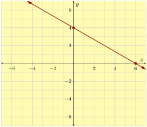
28.
Find the \(x\)- and \(y\)-intercepts of the line with equation \(4x+5y=-40\text{.}\) Then find one other point on the line. Use your results to graph the line.
Answer.
\(x\)-intercept: \((-10,0)\)
\(y\)-intercept: \((0,-8)\)
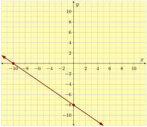
29.
Find the \(x\)- and \(y\)-intercepts of the line with equation \(5x-2y=10\text{.}\) Then find one other point on the line. Use your results to graph the line.
Answer.
\(x\)-intercept: \((2,0)\)
\(y\)-intercept: \((0,-5)\)
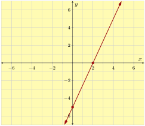
30.
Find the \(x\)- and \(y\)-intercepts of the line with equation \(5x-6y=-90\text{.}\) Then find one other point on the line. Use your results to graph the line.
Answer.
\(x\)-intercept: \((-18,0)\)
\(y\)-intercept: \((0,15)\)
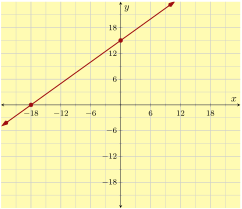
31.
Find the \(x\)- and \(y\)-intercepts of the line with equation \(x+5y=-15\text{.}\) Then find one other point on the line. Use your results to graph the line.
Answer.
\(x\)-intercept: \((-15,0)\)
\(y\)-intercept: \((0,-3)\)
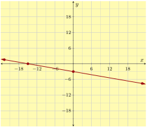
32.
Find the \(x\)- and \(y\)-intercepts of the line with equation \(6x+y=-18\text{.}\) Then find one other point on the line. Use your results to graph the line.
Answer.
\(x\)-intercept: \((-3,0)\)
\(y\)-intercept: \((0,-18)\)
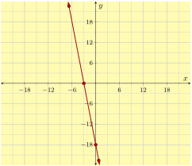
33.
Make a graph of the line \(x+y=2\text{.}\)
Answer.
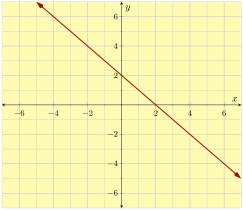
34.
Make a graph of the line \(-5x-y=-3\text{.}\)
Answer.
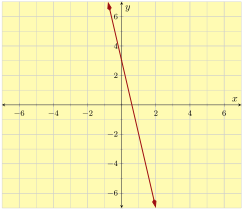
35.
Make a graph of the line \(x+5y=5\text{.}\)
Answer.
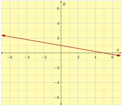
36.
Make a graph of the line \(x-2y=2\text{.}\)
Answer.
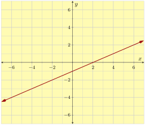
37.
Make a graph of the line \(20x-4y=8\text{.}\)
Answer.
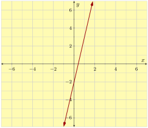
38.
Make a graph of the line \(3x+5y=10\text{.}\)
Answer.
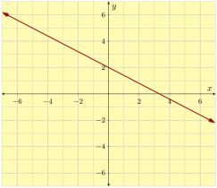
39.
Make a graph of the line \(-3x+2y=6\text{.}\)
Answer.
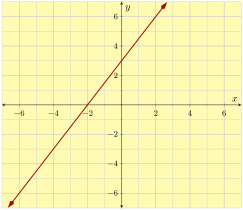
40.
Make a graph of the line \(-4x-5y=10\text{.}\)
Answer.
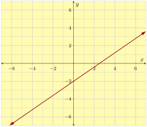
41.
Make a graph of the line \(4x-5y=0\text{.}\)
Answer.
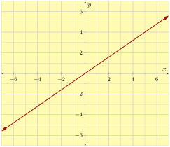
42.
Make a graph of the line \(5x+7y=0\text{.}\)
Answer.
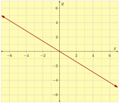
Interpreting Intercepts in Context.
43.
Casandra is buying some tea bags and some sugar bags. Each tea bag costs \(10\) cents, and each sugar bag costs \(4\) cents. She can spend a total of \({\$6.00}\text{.}\)
Assume Casandra will purchase \(x\) tea bags and \(y\) sugar bags. Use a linear equation to model the number of tea bags and sugar bags she can purchase.
Find this line’s \(x\)-intercept, and interpret its meaning in this context.
- A. The x-intercept is (150,0). It implies Casandra can purchase 150 tea bags with no sugar bags.
- B. The x-intercept is (0, 150). It implies Casandra can purchase 150 sugar bags with no tea bags.
- C. The x-intercept is (60,0). It implies Casandra can purchase 60 tea bags with no sugar bags.
- D. The x-intercept is (0,60). It implies Casandra can purchase 60 sugar bags with no tea bags.
Answer.
\(\text{C}\)
Explanation.
Assume Casandra will purchase \(x\) tea bags and \(y\) sugar bags.
Since each tea bag costs \(10\) cents, \(x\) tea bags would cost \(10 x\) cents.
Similarly, \(y\) sugar bags would cost \(4 y\) cents.
Since Casandra can spend a total of \({\$6.00}\text{,}\) or \(600\) cents, we can write the equation:
\(\displaystyle{ 10x+4y=600 }\)
A line’s \(x\)-intercept looks like \((x,0)\text{.}\) To find its \(x\) intercept, we substitute \(y\) in the equation with \(0\text{,}\) and we have:
\(\displaystyle{\begin{aligned}
10x+4y \amp = 600 \\
10x+4(0) \amp = 600 \\
10x \amp = 600 \\
\frac{10x}{10} \amp = \frac{600}{10} \\
x \amp = 60
\end{aligned}
}\)
The line’s \(x\)-intercept is \((60,0)\text{.}\)
The correct solution is C.
44.
Page is buying some tea bags and some sugar bags. Each tea bag costs \(2\) cents, and each sugar bag costs \(6\) cents. She can spend a total of \({\$0.90}\text{.}\)
Assume Page will purchase \(x\) tea bags and \(y\) sugar bags. Use a linear equation to model the number of tea bags and sugar bags she can purchase.
Find this line’s \(y\)-intercept, and interpret its meaning in this context.
- A. The y-intercept is (0,45). It implies Page can purchase 45 sugar bags with no tea bags.
- B. The y-intercept is (15,0). It implies Page can purchase 15 tea bags with no sugar bags.
- C. The y-intercept is (0, 15). It implies Page can purchase 15 sugar bags with no tea bags.
- D. The y-intercept is (45,0). It implies Page can purchase 45 tea bags with no sugar bags.
Answer.
\(\text{C}\)
Explanation.
Assume Page will purchase \(x\) tea bags and \(y\) sugar bags.
Since each tea bag costs \(2\) cents, \(x\) tea bags would cost \(2 x\) cents.
Similarly, \(y\) sugar bags would cost \(6 y\) cents.
Since Page can spend a total of \({\$0.90}\text{,}\) or \(90\) cents, we can write the equation:
\(\displaystyle{ 2x+6y=90 }\)
A line’s \(y\)-intercept looks like \((0,y)\text{.}\) To find its \(y\) intercept, we substitute \(x\) in the equation with \(0\text{,}\) and we have:
\(\displaystyle{\begin{aligned}
2x+6y \amp = 90 \\
2(0)+6y \amp = 90 \\
6y \amp = 90 \\
\frac{6x}{6} \amp = \frac{90}{6} \\
x \amp = 15
\end{aligned}
}\)
The line’s \(y\)-intercept is \((0,15)\text{.}\)
The correct solution is: The y-intercept is (0, 15). It implies Page can purchase 15 sugar bags with no tea bags.
45.
An engine’s tank can hold \(150\) gallons of gasoline. It was refilled with a full tank, and has been running without breaks, consuming \(5\) gallons of gas per hour.
Assume the engine has been running for \(x\) hours since its tank was refilled, and assume there are \(y\) gallons of gas left in the tank. Use a linear equation to model the amount of gas in the tank as time passes.
Find this line’s \(x\)-intercept, and interpret its meaning in this context.
- A. The x-intercept is (150,0). It implies the engine will run out of gas 150 hours after its tank was refilled.
- B. The x-intercept is (30,0). It implies the engine will run out of gas 30 hours after its tank was refilled.
- C. The x-intercept is (0,150). It implies the engine started with 150 gallons of gas in its tank.
- D. The x-intercept is (0,30). It implies the engine started with 30 gallons of gas in its tank.
Answer.
\(\text{B}\)
Explanation.
Assume the engine has been running for \(x\) hours since its tank was refilled, and assume there are \(y\) gallons of gas left in the tank. A linear equation to model the amount of gas in the tank is:
\(\displaystyle{ y = -5x+150 }\)
A line’s \(x\)-intercept looks like \((x,0)\text{.}\) To find its \(x\) intercept, we substitute \(y\) in the equation with \(0\text{,}\) and we have:
\(\displaystyle{\begin{aligned}
y \amp = -5x+150 \\
0 \amp = -5x+150 \\
-150 \amp = -5x \\
\frac{-150}{-5} \amp = \frac{-5x}{-5} \\
30 \amp = x
\end{aligned}
}\)
The line’s \(x\)-intercept is \((30,0)\text{.}\)
The correct solution is: The x-intercept is (30,0). It implies the engine will run out of gas 30 hours after its tank was refilled.
46.
An engine’s tank can hold \(180\) gallons of gasoline. It was refilled with a full tank, and has been running without breaks, consuming \(4\) gallons of gas per hour.
Assume the engine has been running for \(x\) hours since its tank was refilled, and assume there are \(y\) gallons of gas left in the tank. Use a linear equation to model the amount of gas in the tank as time passes.
Find this line’s \(y\)-intercept, and interpret its meaning in this context.
- A. The y-intercept is (45,0). It implies the engine will run out of gas 45 hours after its tank was refilled.
- B. The y-intercept is (0,180). It implies the engine started with 180 gallons of gas in its tank.
- C. The y-intercept is (180,0). It implies the engine will run out of gas 180 hours after its tank was refilled.
- D. The y-intercept is (0,45). It implies the engine started with 45 gallons of gas in its tank.
Answer.
\(\text{B}\)
Explanation.
Assume the engine has been running for \(x\) hours since its tank was refilled, and assume there are \(y\) gallons of gas left in the tank. A linear equation to model the amount of gas in the tank is:
\(\displaystyle{ y = -4x+180 }\)
Since the equation is in slope-intercept mode, we can see its \(y\)-intercept is \((0,180)\text{.}\)
The correct solution is: The y-intercept is (0,180). It implies the engine started with 180 gallons of gas in its tank.
47.
A new car of a certain model costs \({\$44{,}000.00}\text{.}\) According to Blue Book, its value decreases by \({\$2{,}200.00}\) every year.
Assume \(x\) years since its purchase, the car’s value is \(y\) dollars. Use a linear equation to model the car’s value.
Find this line’s \(x\)-intercept, and interpret its meaning in this context.
- A. The x-intercept is (0,44000). It implies the car’s initial value was 44000.
- B. The x-intercept is (44000,0). It implies the car’s initial value was 44000.
- C. The x-intercept is (0,20). It implies the car would have no more value 20 years since its purchase.
- D. The x-intercept is (20,0). It implies the car would have no more value 20 years since its purchase.
Answer.
\(\text{D}\)
Explanation.
Assume \(x\) years since its purchase, the car’s value is \(y\) dollars. A linear equation to model the car’s value is:
\(\displaystyle{ y = -2200x+44000 }\)
A line’s \(x\)-intercept looks like \((x,0)\text{.}\) To find its \(x\) intercept, we substitute \(y\) in the equation with \(0\text{,}\) and we have:
\(\displaystyle{\begin{aligned}
y \amp = -2200x+44000 \\
0 \amp = -2200x+44000 \\
-44000 \amp = -2200x \\
\frac{-44000}{-2200} \amp = \frac{-2200x}{-2200} \\
20 \amp = x
\end{aligned}
}\)
The line’s \(x\)-intercept is \((20,0)\text{.}\)
The correct solution is: The x-intercept is (20,0). It implies the car would have no more value 20 years since its purchase.
48.
A new car of a certain model costs \({\$35{,}200.00}\text{.}\) According to Blue Book, its value decreases by \({\$2{,}200.00}\) every year.
Assume \(x\) years since its purchase, the car’s value is \(y\) dollars. Use a linear equation to model the car’s value.
Find this line’s \(y\)-intercept, and interpret its meaning in this context.
- A. The y-intercept is (16,0). It implies the car would have no more value 16 years since its purchase.
- B. The y-intercept is (0,16). It implies the car would have no more value 16 years since its purchase.
- C. The y-intercept is (35200,0). It implies the car’s initial value was 35200.
- D. The y-intercept is (0,35200). It implies the car’s initial value was 35200.
Answer.
\(\text{D}\)
Explanation.
Assume \(x\) years since its purchase, the car’s value is \(y\) dollars. A linear equation to model the car’s value is:
\(\displaystyle{ y = -2200x+35200 }\)
Since this line is in its slope-intercept mode, we can see its \(y\)-intercept is \((0,35200)\text{.}\)
The correct solution is: The y-intercept is (0,35200). It implies the car’s initial value was 35200.
Challenge
49.
Fill in the variables \(A\text{,}\) \(B\text{,}\) and \(C\) in \(Ax + By = C\) with the numbers \(6,
7\) and \(14\text{.}\) You may only use each number once.
- For the steepest possible slope, \(A\) must be , \(B\) must be , and \(C\) must be .
- For the shallowest possible slope, \(A\) must be , \(B\) must be , and \(C\) must be .
Answer 1.
\(14\)
Answer 2.
\(6\)
Answer 3.
\(7\)
Answer 4.
\(6\)
Answer 5.
\(14\)
Answer 6.
\(7\)
Explanation.
- Let’s put \(Ax + By = C\) into slope-intercept form. Then, the equation becomes \(y = \frac{-A}{B}x + \frac{C}{B} \text{.}\) To make the steepest slope possible, we must maximize the fraction \(\frac{A}{B}\text{.}\) The possibilities are \(\frac{6}{7}, \frac{6}{14}, \frac{7}{6}, \frac{7}{14}, \frac{14}{6}\text{,}\) and \(\frac{14}{7} \text{.}\) The biggest of these is \(\frac{14}{6} \text{.}\) Thus, \(A\) must equal 14, \(B\) must equal 6, and \(C\) must equal 7.
- To make the shallowest slope possible, we must minimize the fraction \(\frac{A}{B}\text{.}\) The smallest of the possible fractions is \(\frac{6}{14} \text{.}\) Thus, \(A\) must equal 6, \(B\) must equal 14, and \(C\) must equal 7.